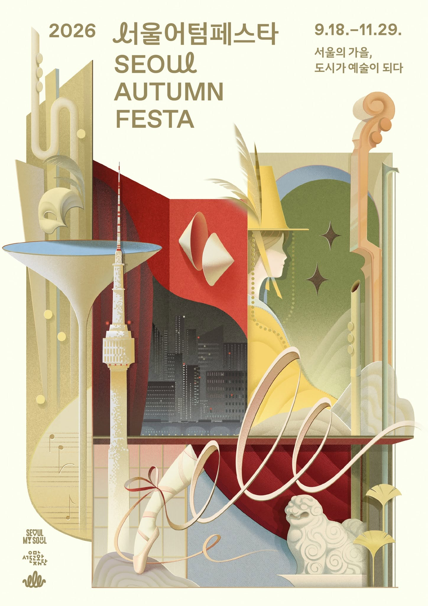

EVENT · FESTIVAL
서초구
한강에서 직접 음식을 만들고 함께 즐기는 가을 미식 축제입니다. 상세 정보는 추후 업데이트될 예정입니다.
축제, 플리마켓, 영화, 강연·토크까지 다양한 서울의 이벤트를 찾아보세요.

한강에서 직접 음식을 만들고 함께 즐기는 가을 미식 축제입니다. 상세 정보는 추후 업데이트될 예정입니다.
도심에서 공연과 체험을 함께 즐기는 가을 문화축제입니다. 상세 정보는 추후 업데이트될 예정입니다.
소규모 브랜드와 창작자의 소품을 만나는 주말 장터입니다. 상세 정보는 추후 업데이트될 예정입니다.
다양한 시선의 독립영화를 만나고 이야기를 나누는 자리입니다. 상세 정보는 추후 업데이트될 예정입니다.
도시의 일상과 디자인에 관한 생각을 나누는 공개 강연입니다. 상세 정보는 추후 업데이트될 예정입니다.
가을 한강을 걸으며 건강한 하루를 보내는 참여형 행사입니다. 상세 정보는 추후 업데이트될 예정입니다.
독립출판물과 중고책을 만나볼 수 있는 책 장터입니다. 상세 정보는 추후 업데이트될 예정입니다.
청년 창작자들의 경험을 듣고 질문을 나누는 토크입니다. 상세 정보는 추후 업데이트될 예정입니다.
물건을 나누고 새로운 쓰임을 발견하는 지역 바자회입니다. 상세 정보는 추후 업데이트될 예정입니다.
서울을 배경으로 한 작품을 함께 보고 이야기를 나눕니다. 상세 정보는 추후 업데이트될 예정입니다.
연말 선물을 위한 수공예 작품과 소품을 만나보세요. 상세 정보는 추후 업데이트될 예정입니다.
겨울 풍경과 문화 체험을 함께 즐기는 행사입니다. 상세 정보는 추후 업데이트될 예정입니다.
영화 감상 뒤 관객과 함께 생각을 나누는 프로그램입니다. 상세 정보는 추후 업데이트될 예정입니다.
책을 매개로 작가와 독자가 만나는 대화의 시간입니다. 상세 정보는 추후 업데이트될 예정입니다.
작은 브랜드의 겨울 소품과 생활용품을 소개합니다. 상세 정보는 추후 업데이트될 예정입니다.
새해의 목표와 생활을 주제로 이야기를 나눕니다. 상세 정보는 추후 업데이트될 예정입니다.
다양한 창작 상품을 한자리에서 만나는 연말 장터입니다. 상세 정보는 추후 업데이트될 예정입니다.
ALL · SHOWING RESULTS